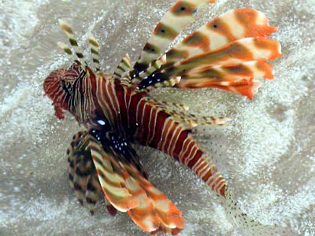

Very close to seashore
A lionfish near coral
Lionfish is very calm and not aggressive. When you approach it the fish moves quite slowly from you. Once I almost touch it by my hand but the fish was in rest. Perhaps it is sure that nobody can touch it. Actually, it is very dangerous! Big eyes say that it is a night fish. In day, when we see it, the fish probably is in sleepy mood.